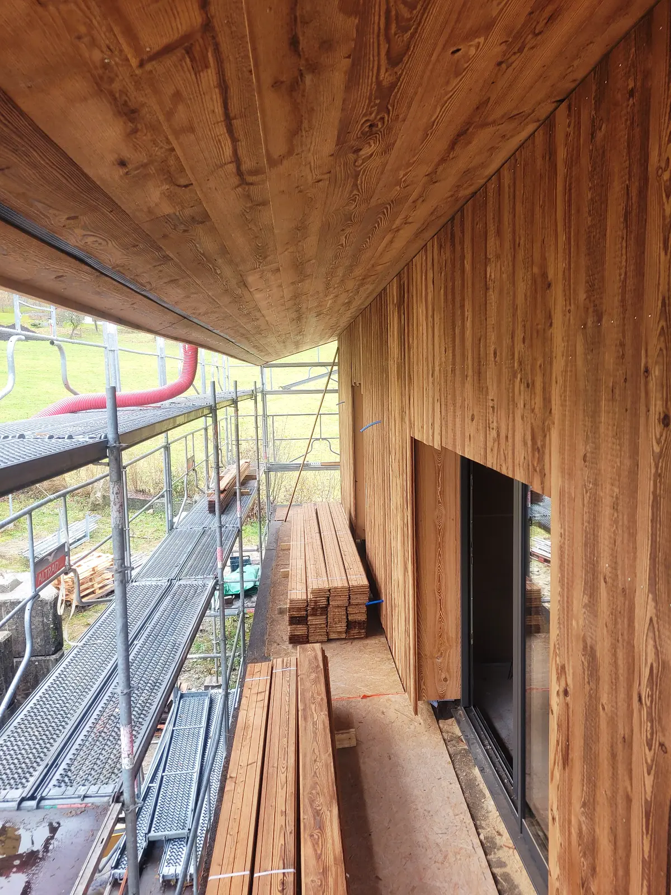

Douglas
Résineux robuste cultivé en France, naturellement durable. Idéal pour la charpente, l'ossature et le bardage.

Bien isoler sa maison, c'est gagner en confort toute l'année. Nous isolons combles et façades avec des isolants biosourcés autant que possible, et posons des bardages en bois local.
Isolation des rampants, des combles perdus ou par l'extérieur : nous vous conseillons la solution la plus adaptée à votre maison. Nous privilégions les isolants biosourcés, comme la fibre de bois, la ouate de cellulose ou le chanvre, qui protègent bien de la chaleur l'été et régulent l'humidité.
La pose est méticuleuse : isolant continu, frein-vapeur soigneusement raccordé, points délicats traités un par un. C'est ce soin qui fait la performance réelle d'une isolation.

Pour un bardage, le Douglas et le châtaignier, deux essences locales, conviennent très bien sans traitement chimique. Avec le temps, ils prennent une belle teinte grise naturelle.
Résineux robuste cultivé en France, naturellement durable. Idéal pour la charpente, l'ossature et le bardage.
Le bois noble de la charpente traditionnelle : dense, solide, superbe en poutres apparentes.
Résistant aux intempéries sans traitement chimique : bardages, terrasses, ouvrages extérieurs.
Bois clair, dense et élégant, apprécié notamment pour les terrasses.
Dès que c'est possible, nous donnons une seconde vie à des bois de qualité : moins de déchets, et des pièces qui ont une histoire.
Les isolants d'origine végétale stockent du carbone, protègent bien de la chaleur en été et régulent l'humidité de la maison. Ce sont des matériaux sains et agréables à vivre.
Le Douglas et le châtaignier, deux essences locales, conviennent très bien au bardage sans traitement chimique. Avec le temps, le bois grise naturellement, ce qui fait partie de son charme.
L'isolation par l'extérieur supprime la plupart des ponts thermiques et ne réduit pas la surface habitable, mais elle change l'aspect de la façade. Selon votre maison et les règles de votre commune, nous vous aidons à choisir.
Nous venons voir votre maison, écoutons votre projet, puis vous remettons un devis détaillé, poste par poste.